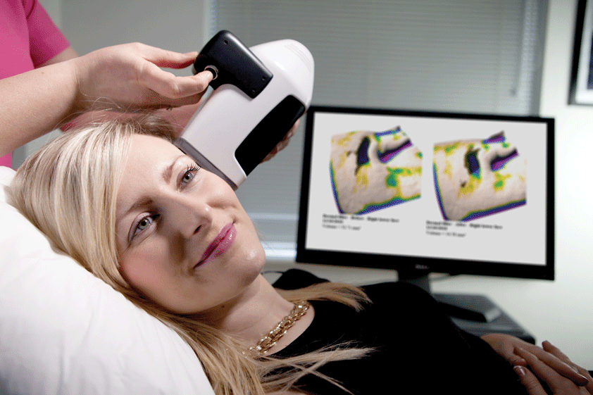

Developed at the Physics Department of Trinity College Dublin, Antera 3D® is a unique product in many ways.
Versatile and rich in features. The only camera that can accurately measure wrinkles, texture, scars, skin color, redness and pigmentation. It provides a full overview of the skin at a touch of a button, allowing you to visualise and quantify a wealth of skin parameters.
Fast and portable. Image acquisition takes less than a second. Full analysis and report generation is done in less than 90 seconds. Unlike most competing products, Antera 3D® is easy to carry around and to use on any body part.
Measurements are highly accurate, with a ± 5% error – best available. Software assisted image comparisons show before-and-after treatments efficacy and enable progress tracking.
Operating Principle of Antera 3D
The Antera 3D® is a camera for image acquisition and analysis of the skin. The Antera 3D® relies on multi-directional illumination and computer-aided reconstruction of the skin surface, illuminating the surface from different angles and using the differences between these images to reconstruct the surface in three dimensions. The skin topography and the chromophores’ concentration are derived from the spatial and spectral analysis of the acquired image data, obtained by illuminating the skin with light emitting diodes (LEDs) of different wavelengths shining from different directions
The acquired spectral data is used to map the distribution and concentration of melanin and haemoglobin. Unlike traditional imaging techniques, where only three colour channels (red, green, and blue) are used, the Antera 3D® uses reflectance mapping of seven different light wavelengths spanning the entire visible spectrum. This allows for a much more precise analysis of the skin colorimetric properties, which are mostly determined by two dominant chromophores: melanin and haemoglobin. Acquired spectral images are transformed into skin spectral reflectance maps, and the skin surface shape is used to compensate for light intensity variation due to the varying direction of incident illumination. The reflectance data is transformed into skin absorption coefficients and used to quantify melanin and haemoglobin concentrations using mathematical correlation with known spectral absorption data of these chromophores
The reconstruction ofS the skin texture is achieved using a technique based on Shape from Shading (SFS)1, extensively modified in order to eliminate skin glare and improve the accuracy of measured data. The texture reconstructed in this way is then used for quantitative skin analysis such as depth and width of wrinkles, lesions of the skin and overall skin roughness.

The Antera 3D software is available in 3 versions:
Standard
Targeted to aesthetic doctors and dermatologists who need a powerful and versatile consultation tool. Provides a full set of features including wrinkles, textures, pigmentation & redness visualisation and measurement.
Pro
Ideal for aesthetic doctors and dermatologists who want to make the Antera 3D an even more effective analysis/consultation tool. It provides enhanced volumetric measurements suitable for atrophic/hypertrophic scars, dermal filler injections, etc. It further includes an additional tool for pores analysis.
CS
Targeted to cosmetic laboratories, manufacturers and research organisations that require a research-grade instrument for skin analysis. Includes (1) extended multi-spectral analysis (2) advanced volumetric, colorimetric and topographic features, and (3) enriched data export capabilities.
Technical specs
| Field of view | 56x56mm |
| Resolution | Lateral: 0.1mm, Vertical: 0.01mm |
| Accuracy | ±5% |
| Connection | Custom USB cable |
| Net weight | 0.5 Kg |
| Power supply | 110-240 VAC/50-60 Hz |
| Absorbed power | Standby: 1.4VA, Image Acquisition: 6.2VA |